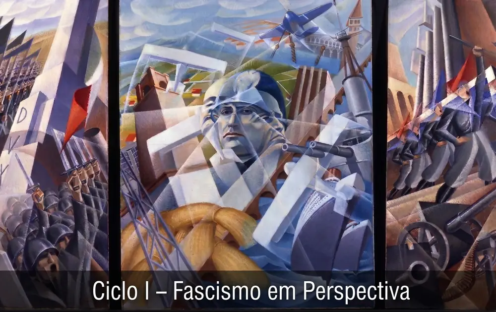

NETEX · GETEX
Grupo de Estudos sobre Transnacionalismo e Extremismos
O GETEX é a porta de entrada dos estudantes no núcleo. Reúne graduandos, pós-graduandos e pesquisadores em torno da leitura sistemática da bibliografia especializada sobre extremismos, política reacionária e violência política, com três finalidades articuladas: formar repertório teórico comum, discutir pesquisas em andamento em seminários internos e preparar projetos de iniciação científica, de conclusão de curso e de pós-graduação.
Inscrições abertas para o Ciclo I
De 9 de setembro a 12 de outubro de 2026. Doze vagas para a graduação da UFU, seis para a pós-graduação de qualquer instituição e duas para docentes, pesquisadores e egressos.
Ciclo I — Fascismo em Perspectiva
As correntes interpretativas do fascismo, lidas nos autores originais. Trinta e duas sessões quinzenais entre outubro de 2026 e julho de 2028.

- Periodicidade
- Quinzenal, terças, 19h às 20h30
- Sessões
- 32, de 1h30
- Carga horária
- 48 horas presenciais
- Vagas
- 20
- Coordenação
- Prof. David Magalhães
Fascismo em Perspectiva é um ciclo de estudos permanente do GETEX, voltado à formação teórica de estudantes de graduação e de pós-graduação e à consolidação de um vocabulário analítico comum entre os pesquisadores do núcleo. O objetivo é compreender o fascismo por diversos ângulos, lendo os autores em seus próprios termos.
O nome enuncia o princípio de organização. Cada corrente interpretativa constitui um ângulo, um conjunto de perguntas, um recorte de objeto, sem que nenhuma delas esgote a compreensão do fenômeno. O percurso consiste em ocupar sucessivamente cada uma dessas posições, reconstruir o argumento a partir de dentro e só então submetê-lo à crítica. Ao final, o grupo dispõe não de uma definição, mas de um mapa das definições possíveis e de suas razões.
Este é o primeiro ciclo. Ele percorre a matriz clássica das teorias do fascismo tal como sistematizada por Woodley, do debate marxista dos anos 1940 ao pós-estruturalismo, encerrando com a produção posterior a 2010 e com o problema do alcance desses conceitos fora do centro europeu.
O Ciclo I resultará em um livro coletivo, que será organizado e revisado pelo Prof. David Magalhães, autor também da introdução. Cada módulo do itinerário corresponde a um capítulo, e cada sessão a uma subseção escrita a quatro mãos pelo relator e pelo debatedor daquele encontro. Os dois apresentam um esboço uma semana antes da sessão, declarando o ponto em que discordam entre si e as questões que a discussão precisa resolver; a versão plena é redigida depois do debate, incorporando o que foi decidido em conjunto. A sessão de balanço, ao final do ciclo, dá origem à conclusão. Ao fim das trinta e duas sessões, o grupo disporá de um manuscrito completo — e não de um conjunto de anotações a organizar depois.
Matriz de referência: WOODLEY, Daniel. Fascism and Political Theory: Critical Perspectives on Fascist Ideology. Londres e Nova York: Routledge, 2010, Tabela 1.1, p. 4.
As sete perspectivas
A Tabela 1.1 de Woodley organiza a bibliografia sobre o fascismo em sete perspectivas, distinguindo, para cada uma, como o fenômeno é explicado, que função social lhe é atribuída e que traços ideológicos o definem. É o mapa do percurso: cada linha corresponde a um módulo do ciclo.
| Perspectiva | Principais autores | Forma de explicação | Função social | Características ideológicas |
|---|---|---|---|---|
| Marxismo |
|
|
|
|
| Totalitarismo |
|
|
|
|
| Teoria da modernização |
|
|
|
|
| Fascismo genérico I |
|
|
|
|
| Culturalismo |
|
|
|
|
| Fascismo genérico II |
|
|
|
|
| Teoria crítica e pós-estruturalismo |
|
|
|
|
Tradução e revisão do NETEX a partir de Woodley (2010, p. 4–5). O ciclo acrescenta uma oitava perspectiva, dedicada à produção posterior a 2010 e à periferia, e uma quarta coluna própria sobre a aplicabilidade ao caso brasileiro.
Arquitetura do itinerário
O percurso reproduz integralmente as sete perspectivas da tabela, na ordem em que ali aparecem, acrescidas de uma sessão de abertura metodológica, uma sessão sobre a produção posterior a 2010 e uma sessão de balanço.
| # | Módulo | Sessões | Período |
|---|---|---|---|
| 0 | Abertura metodológica | 1 | out. 2026 |
| 1 | Marxismo | 5 | nov. 2026–mar. 2027 |
| 2 | Totalitarismo | 4 | mar.–maio 2027 |
| 3 | Teoria da modernização | 2 | maio–jun. 2027 |
| 4 | Fascismo genérico I | 3 | jun.–ago. 2027 |
| 5 | Culturalismo | 5 | ago.–nov. 2027 |
| 6 | Fascismo genérico II | 5 | nov. 2027–abr. 2028 |
| 7 | Teoria crítica e pós-estruturalismo | 5 | abr.–jun. 2028 |
| 8 | Abordagens pós-2010 e a periferia | 1 | jun. 2028 |
| 9 | Balanço e agenda de pesquisa | 1 | jul. 2028 |
Cronograma
Trinta e duas sessões quinzenais, de outubro de 2026 a julho de 2028.
2026/2 — 4 sessões
| 0 | 27/10/2026 | Abertura metodológica |
| 1 | 10/11/2026 | Marxismo 1 — capitalismo de Estado |
| 2 | 24/11/2026 | Marxismo 2 — bonapartismo e Estado de exceção |
| 3 | 08/12/2026 | Marxismo 3 — movimento de massas |
2027/1 — 9 sessões
| 4 | 02/03/2027 | Marxismo 4 — ideologia e interpelação popular |
| 5 | 16/03/2027 | Marxismo 5 — irracionalismo e alcance periférico |
| 6 | 30/03/2027 | Totalitarismo 1 — Arendt |
| 7 | 13/04/2027 | Totalitarismo 2 — Talmon; Friedrich e Brzezinski |
| 8 | 27/04/2027 | Totalitarismo 3 — Kornhauser; Marcuse |
| 9 | 11/05/2027 | Totalitarismo 4 — crítica do conceito |
| 10 | 25/05/2027 | Modernização 1 — extremismo de centro (Lipset; Sauer) |
| 11 | 08/06/2027 | Modernização 2 — ditaduras desenvolvimentistas (Gregor; Turner) |
| 12 | 22/06/2027 | Fascismo genérico I.1 — Nolte |
2027/2 — 9 sessões
| 13 | 03/08/2027 | Fascismo genérico I.2 — Eugen Weber |
| 14 | 17/08/2027 | Fascismo genérico I.3 — Linz |
| 15 | 31/08/2027 | Culturalismo 1 — Mosse (gênese e estética) |
| 16 | 14/09/2027 | Culturalismo 2 — Mosse (masculinidade e sexualidade) |
| 17 | 28/09/2027 | Culturalismo 3 — Sternhell |
| 18 | 19/10/2027 | Culturalismo 4 — Kershaw |
| 19 | 09/11/2027 | Culturalismo 5 — Diner e a singularidade do nazismo |
| 20 | 23/11/2027 | Fascismo genérico II.1 — Griffin (palingenesia) |
| 21 | 07/12/2027 | Fascismo genérico II.2 — Griffin (modernismo) |
2028/1 — 10 sessões, em projeção
| 22 | 07/03/2028 | Fascismo genérico II.3 — Eatwell |
| 23 | 21/03/2028 | Fascismo genérico II.4 — Payne |
| 24 | 04/04/2028 | Fascismo genérico II.5 — Paxton |
| 25 | 18/04/2028 | Teoria crítica 1 — Benjamin e Adorno |
| 26 | 02/05/2028 | Teoria crítica 2 — Dialética do Esclarecimento |
| 27 | 16/05/2028 | Teoria crítica 3 — Lacoue-Labarthe, Nancy e Hewitt |
| 28 | 30/05/2028 | Teoria crítica 4 — Agamben |
| 29 | 13/06/2028 | Teoria crítica 5 — Neocleous |
| 30 | 27/06/2028 | Abordagens pós-2010 e a periferia |
| 31 | 11/07/2028 | Balanço e agenda de pesquisa |
As sessões ocorrem quinzenalmente às terças-feiras, das 19h às 20h30, no campus Santa Mônica. O calendário foi construído sobre a Resolução CONGRAD nº 158, de 24 de fevereiro de 2025, que fixa os períodos letivos até 2027/2. As dez sessões de 2028 são projeções e serão reancoradas quando o calendário daquele ano for publicado. O intervalo entre as sessões 17 e 18 é de três semanas, para contornar o feriado de 12 de outubro de 2027.
Como funciona uma sessão
O desenho tem uma finalidade específica: tornar a leitura verificável e a participação inevitável, sem transformar o ciclo em sala de aula. Cada dispositivo responde a um modo típico de fracasso dos grupos de leitura — a leitura apenas pelo relator, o silêncio dos participantes menos experientes e a diluição da discussão em impressões gerais.
| Tempo | Momento | Descrição |
|---|---|---|
| 0–8 min | Rodada de abertura | Cada participante enuncia, em uma única frase, o argumento central do texto. Nominal, sem discussão, sem passar a vez. |
| 8–30 min | Relatoria | Exposição do relator: contexto da obra, estrutura do argumento, posição do autor no campo. Sem juízo crítico nesta etapa. |
| 30–48 min | Arguição | O debatedor apresenta objeções, tensões internas e confrontos com sessões anteriores. Réplica do relator. |
| 48–80 min | Discussão por eixos | Discussão aberta, organizada pelos eixos extraídos das fichas de leitura. |
| 80–90 min | Fecho da tabela | Preenchimento coletivo, na tela, da linha correspondente da tabela ampliada. Registro em ata e definição do prazo da subseção. |
A ficha de leitura
Instrumento central do desenho. Um formulário enviado até 48 horas antes de cada encontro, sempre com os mesmos cinco campos. Os três primeiros reproduzem exatamente as colunas da tabela de Woodley — o que significa que, ao fim das 32 sessões, o grupo terá acumulado, sem esforço adicional, o material bruto da tabela ampliada.
- Modo de explicação. Como este autor explica a emergência do fascismo?Até 600 caracteres
- Função social. Que função o fascismo cumpre, segundo ele?Até 600 caracteres
- Características ideológicas. Que traços ideológicos ele identifica?Até 600 caracteres
- Trecho escolhido. Transcreva uma passagem de até cinco linhas que considere decisiva, com indicação de página, e explique em uma frase por que a escolheu.
- Uma pergunta ao autor. A dúvida, objeção ou impasse que você levaria a ele.Uma frase
Regras de participação
Frequência
- Presença em ao menos 24 das 32 sessões, isto é, 75%.
- Três ausências consecutivas não justificadas implicam desligamento automático, com convocação da lista de espera se ainda houver prazo.
- Justificativas devem ser comunicadas ao coordenador antes do encontro e não dispensam o envio da ficha de leitura.
Certificação
Faz jus ao certificado quem cumprir, cumulativamente, frequência de 75%, envio de ao menos 75% das fichas de leitura e realização de no mínimo duas relatorias. O certificado registra 48 horas e pode ser aproveitado como atividade complementar conforme as normas de cada colegiado de curso.
Leitura
- Todos leem o texto-âncora de cada sessão. Não há leitura facultativa: a distinção entre relator e demais participantes é de função, não de carga.
- O relator e o debatedor leem também os textos de contraponto e apoio.
- Os textos ficam disponíveis na área do participante.
Conduta
O ciclo percorre textos de tradições políticas e teóricas antagônicas, incluindo autores cuja posição política é objeto de controvérsia. Ler não é endossar: a regra é a reconstrução fiel do argumento antes da crítica. São vedadas manifestações discriminatórias de qualquer natureza, nos termos da política institucional da UFU. O tema do grupo torna essa regra mais necessária, não menos.
Processo seletivo
O limite de vinte pessoas não é administrativo, e sim metodológico: a dinâmica pressupõe que cada participante fale ao menos duas vezes por sessão em rodada nominal. Acima de vinte, a rodada consome o encontro inteiro e o ciclo degenera em auditório.
Vagas
- 12 para estudantes de graduação da UFU, a partir do 3º período, prioritariamente de Relações Internacionais, Ciências Econômicas, História e Ciências Sociais.
- 6 para estudantes de mestrado e doutorado de qualquer instituição, em qualquer área das ciências humanas e sociais.
- 2 para docentes, pesquisadores externos ou egressos, na condição de participantes plenos.
- Lista de espera com até dez nomes, acionada a cada desligamento ocorrido até a sessão 5.
Não há pré-requisitos
Não se exige formação prévia no tema nem certificação de idioma. O ciclo é, por definição, formativo: quem chega sem repertório acumulado o constrói ao longo do percurso, que é justamente o que ele se propõe a fazer.
O grupo mantém um glossário coletivo, indica com antecedência as traduções disponíveis em português e em espanhol e distribui roteiros de leitura para cada sessão.
Etapas
| 09/09/2026 | Publicação da chamada e abertura das inscrições |
| 12/10/2026 | Encerramento das inscrições |
| 13 a 16/10/2026 | Análise das candidaturas |
| 19/10/2026 | Divulgação do resultado |
| até 23/10/2026 | Confirmação de vaga pelo selecionado |
| 27/10/2026 | Sessão de instalação, terça, 19h |
As sessões ocorrem quinzenalmente às terças-feiras, das 19h às 20h30, a partir da instalação em 27 de outubro de 2026.
Inscrever-se no Ciclo I
Inscrições de 9 de setembro a 12 de outubro de 2026. Leva cerca de 15 minutos. Reúna o que segue antes de começar — o formulário não permite salvar e retomar depois.
- Dados de matrícula: curso, período e instituição.
- Um parágrafo sobre o que o levou a se candidatar e o que espera do ciclo.
- Disponibilidade confirmada nas terças, quinzenalmente, por dois anos.
O formulário é hospedado em conta institucional da Universidade Federal de Uberlândia e abre em nova aba. As informações de cor/raça e de acessibilidade são autodeclaradas, opcionais e usadas apenas na composição final do grupo, nunca na pontuação individual. Dúvidas sobre o tratamento desses dados podem ser enviadas para netex@ufu.br.
Área do participante
Textos de cada sessão, ficha de leitura, calendário de relatorias, atas, glossário coletivo e painel de frequência. O acesso é nominal e restrito a quem está inscrito no ciclo.